音频调试手册
1. 音频系统介绍 -- 软件¶
1.1. 音频算法流程图¶
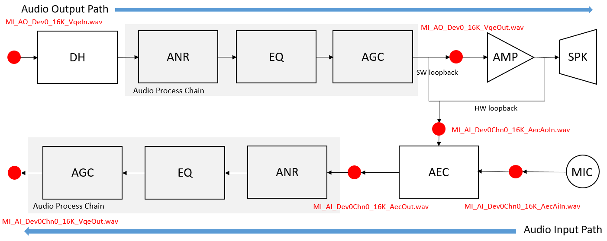
NOTE: AEC Hardware loopback version and SW loopback version cannot be used at the same time.
图1: 音频算法流程图
1.2. 音频优化算法与相关名词¶
1.2.1 回声消除 (AEC)
当扬声器设备播放的声音通过直接或间接路径传回麦克风时，会产生回声。 因此，远程的通话者在延迟后会听到他或她自己的声音，这称为声学回声 (acoustic echo)。 声学回声消除 (Acoustic echo cancellation) 是指防止讲话者听到自己声音回声的回声消除方法。
1.2.2. 去啸叫 (DH)
啸叫在扩声系统中很常见。 当麦克风和扬声器在同一空间时，声音从扬声器放大，然后被麦克风接收，形成一个声音反馈回路。 当放大增益足够大时，在特定频段会发生自激振荡，从而产生刺耳的啸叫。 De-Howling (DH) 是抑制啸叫的功能。
1.2.3. 噪声消除(ANR)
降噪可以降低语音信号中从环境中持续出现一段时间并持续存在的背景噪声。
1.2.4. 均衡器 (EQ)
均衡器可以增强或衰减某些频段的能量。
1.2.5. 自动增益控制 (AGC)
自动增益控制可以平衡信号的功率。 如果信号能量太低，它可以增强增益，如果信号能量太高，它可以衰减增益。
2. 回声消除相关名词及定义¶
2.1. 声学回声 (Acoustic Echo)¶
当扬声器设备播放的声音通过直接或间接路径传回麦克风时，会产生回声。 因此，远程的通话者在延迟后会听到他或她自己的声音，这称为声学回声 (AE)。 声学回声消除 (AEC) 是指防止讲话者听到自己声音回声的回声消除方法。 扬声器与麦克风之间可能包括各种路径，如下所示：
-
扬声器和麦克风之间的直接路径；
-
VoIP 电话机构表面之反射；
-
来自摆放VoIP 电话空间的墙壁和其他物体/人的反射；
-
通过手机的物理外壳耦合声音，以底盘振动的形式；
-
电话音频前端硬件音频编解码器中的环回模式。
2.2. 近端讯号 (Sin)¶
从麦克风记录的信号，指的是近端信号。 它可以混合声学回声 (AE) 和讲话者 (NS) 的信号。 见图 2。
2.3. 远程讯号 (Rin)¶
扬声器的源信号，指的是远程信号。 它可能来自音频文件（播放音乐的智能扬声器）或互联网（有人用其他设备说话）。 详见图 2。
2.4. 单讲(Single Talk)¶
对讲时仅从扬声器播放一些音频或语音（即 Sin = AE + NS，其中 NS = 0）。 见图 2。
2.5. 双讲(Double Talk)¶
对奖时从扬声器播放一些音频或语音，有人也在麦克风前讲话（即 Sin = AE + NS，其中 NS≠0）。 见图 2。
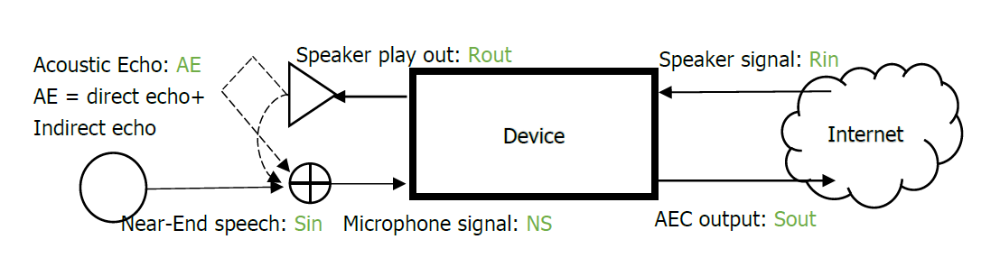
图2: 回声消除输入输出讯号关系图
3. 回声消除规格¶
AEC所需规格如下：
-
扬声器与麦克风距离最好在4厘米到10厘米之间，越长越好。设备外壳同时需要遵循4.声学机构测试规范。
-
如果使用音讯文件作为音源，请确保：
A. 音讯文件中没有混迭（参见图 3），因为会影响 AEC 结果。
B. 音频文件中没有信号削波（见图 4），因为会影响 AEC 结果。
C. 采样频率为 8 kHz 或 16 kHz。
D. 麦克风录到回声时，远程信号已送入AEC库（见图5）； 否则，结果将受到影响。
-
AO和AI之间的延迟时间在采样率为16 kHz时必须小于0.128秒（或在采样率为8 kHz时为0.256秒），并且Far-End信号的时序应早于Near-end的时序 信号（见图 6）。
-
麦克风和扬声器的取样频率必须相同。
-
喇叭不要超载； 否则 AEC 性能会随着非线性失真增加而降低。
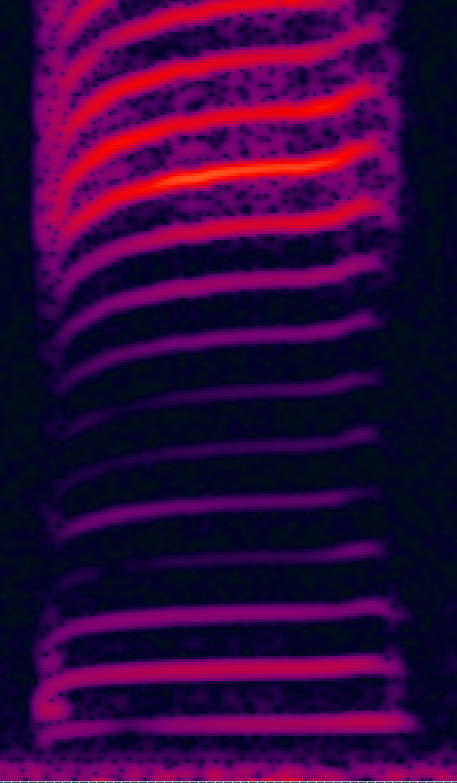
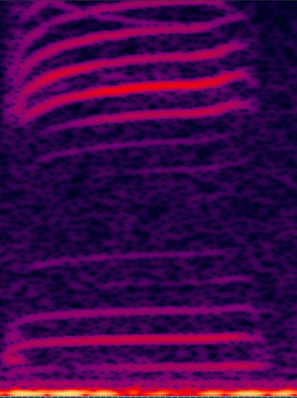
图3: 无混迭信号 (L) 与混迭信号 (R)
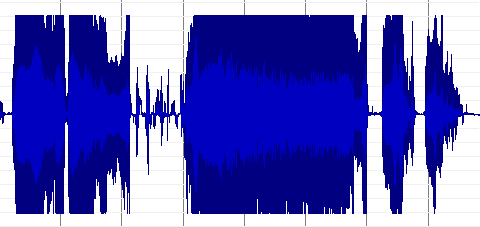
图4: 信号削波实例
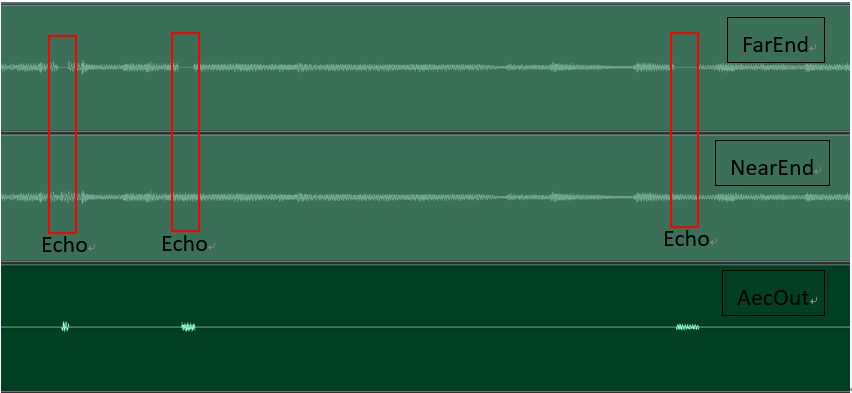
图5: 出现回声时，AEC 中未馈送远程信号
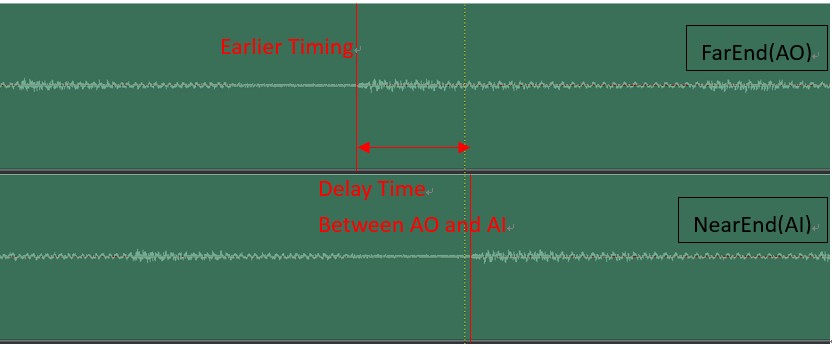
图6: AI和AO之间的延迟时间，以及远程信号和近端信号之间的时序关系
4. <span id=test 声学机构测试</span¶
4.1. 机构与回声消除之关联¶
外壳设计在很大程度上决定了免持设备（例如，具有免持电话模式的电话）的性能。 即使使用世界上最好的 AEC 软件，也会因为设备外壳设计不当，语音质量受到严重影响。
以下部分列出了一些主要建议，以确保硬件不会成为 AEC 性能方面的绊脚石。 例如，仅当麦克风和扬声器是宽带时，宽带语音编解码器支持才有意义。 同样，如果麦克风或扬声器在回声路径中若有任何非线性，则回声的线性模型将无法有效地消除回声； 如此的话，将在全双工条件下引起失真副作用。
4.1.1. 机构设计建议
扬声器:
后腔是必须的。 请勿仅在产品外壳中使用扬声器。 参见图 7。 扬声器外壳前部和后部之间的紧密连接将有助于减少从后腔到扬声器前部的声音传播。 扬声器应牢固地安装在前后腔之间的接口处，因为扬声器将作为后箱体结构的一部分。 扬声器的安全安装还将确保扬声器和外壳不会产生卡嗒卡嗒的声音。 将扬声器框架安装到外壳时通常使用高密度泡沫，建立安全且紧密的机构配置。 前腔孔应至少占扬声器面积的 20%，与扬声器框架的间距为 1-2 毫米。
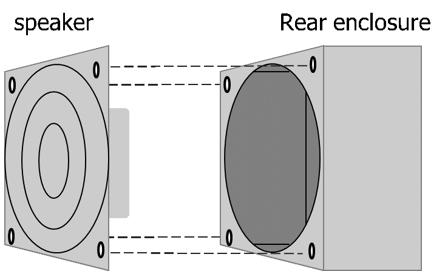
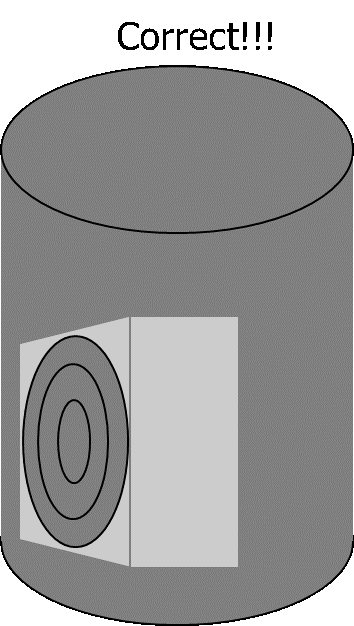
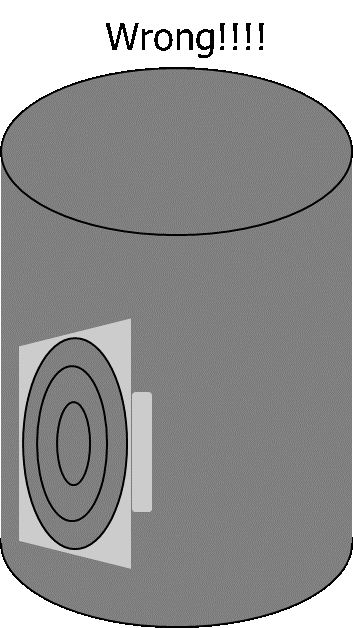
图7: 为设备的扬声器挑选合适的后腔
麦克风:
确保麦克风紧密安装在麦克风信道中，通过直接路径减少扬声器-麦克风耦合来增加 ERL（回声回波损耗）。 除此之外，还可以将麦克风包裹在外壳内的单独外壳中。 麦克风应与孔对齐。 见图 8。
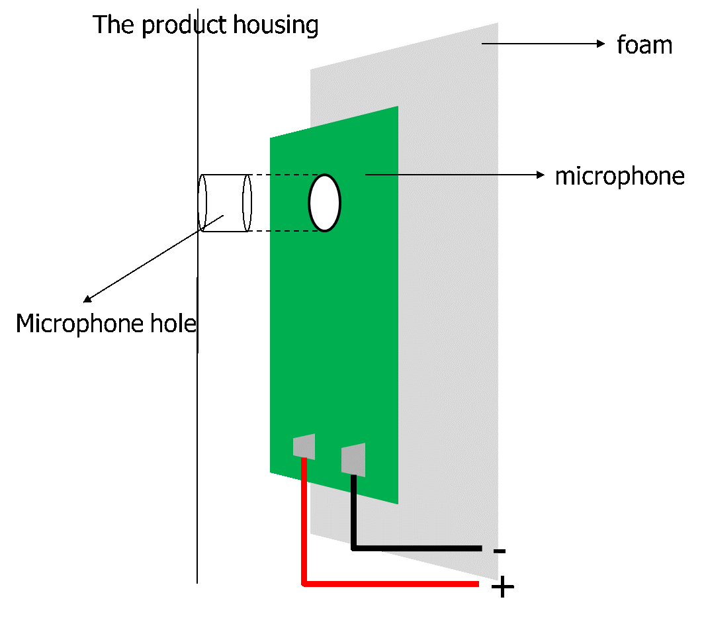
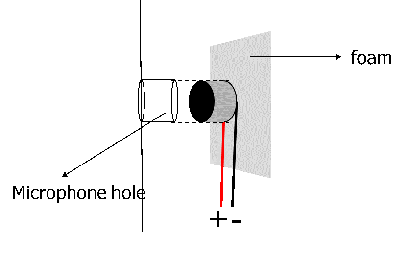
图8: 麦克风安装示意图
麦克风与扬声器相对位置:
扬声器和麦克风之间的距离应尽可能远离。 如果距离太近，从麦克风记录的回声很有可能因为大大声而被削波。 为了在这种情况下保持 AEC 性能，用户应将扬声器的音量设置得较低，但这样声压级可能不符合客户需求，如图 9 所示。
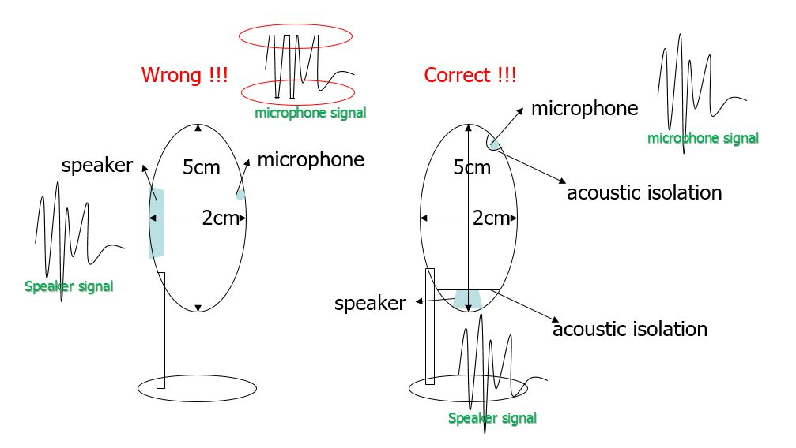
图9: 确保麦克风与扬声器间距以避免麦克风讯号截波
4.2. 客观声学测试¶
产品外壳设计完成后，使用者需要评估两个客观值来验证机构与外壳是否合格，客观值有如下建议：
-
隔音： 可以测量扬声器和麦克风之间的外壳内部的隔离度
-
扬声器和麦克风性能： 回波回波损耗（ERL）：可以测量从扬声器到麦克风衰减了多少声学回声功率。
测量前，使用者需要确认以下参数：
a) DUT 与用户之间的距离 = X cm
b) 用户想在这个距离听到 DUT SPK 的 Y dBSPL
DUT MIC 期望从用户接收 Z dBSPL 后续的测量环境将根据这些参数进行设置。
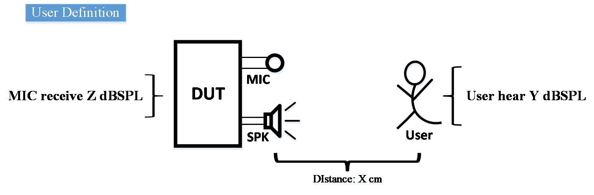
备注：
-
建议使用IEEE女性（-18dB AVGRMS）语音检查距离和增益
-
体积计算方法
-
录音结束后，删除前后无声部分
-
将整个语音框起来计算 AVGRMS
-
-
确保录制的语音在任何频率下都不会出现截波。
-
需要避免语音截波
-
重新设计麦克风与扬声器增益值
-
重新定义用户距离和音量
-
测量 DUT 麦克风和 DUT 扬声器的性能
-
4.2.1. 麦克风声学隔离
测试环境噪音不能超过40dbA。 请使用分贝计，设置为 FAST 并使用最小刻度。 SPK 级别和 MIC 级别应确保在 SPK 播放正常语音时录音文件不会被截波。
使用者需要评估三个客观值，以验证机构外壳是否足以满足音频质量。
a) 外部隔音
-
禁用麦克风和扬声器算法（AEC、NR、AGC、EQ...）
-
使用参考 MIC 测量 DUT 位置的扬声器音量。 外部 SPK 播放白噪声。 音量必须满足 80dBSPL。
-
Ref MIC 使用 MIC 校准器测量 1kHz 94dBSPL 正弦波 = X dBRMS
-
预期参考 MIC 测得 1kHz 80dBSPL = X -14 dBRMS
-
修改外部 SPK的音量，使ref MIC测量到X-14 dBRMS
-
完成SPK 音量校准。
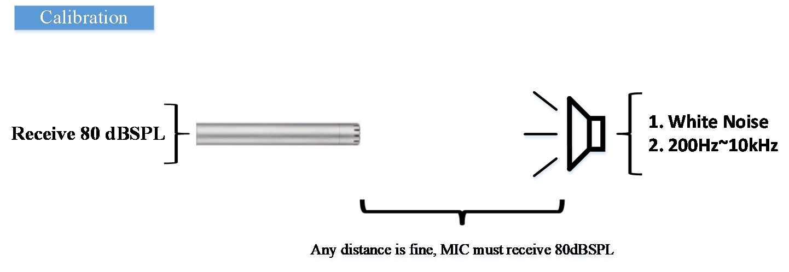
图10: 麦克风校正方式
-
-
DUT 记录来自外部 SPK = AVGRMS(X) 的 80dBSPL 白噪声
-
使用粘土密封 MIC 孔，然后 DUT 记录来自外部 SPK = AVGRMS(Y) 的 80dBSPL 白噪声
-
规格：AVGRMS(X)-AVGRMS(Y) 20dBRMS
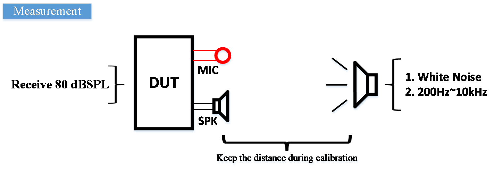
图11: 麦克风声学隔离量测方式
b) 内部隔音
-
禁用麦克风和扬声器算法（AEC、NR、AGC、EQ...）
-
使用距离 DUT 50cm 的参考 MIC 测量 DUT SPK 的音量。 DUT SPK 回放白噪声。 音量必须满足 80dBSPL。
-
Ref MIC 使用 MIC 校准器测量 1k 94dBSPL 正弦波 = X dBRMS
-
预期参考 MIC 测得 1k 80dBSPL = X -14 dBRMS
-
因此，Ref MIC 将在距离 DUT 50cm 处测量 X -14dBRMS
-
修改 DUT SPK 增益，让 Ref MIC 测量 X-14 dBRMS
-
完成SPK 音量校准。
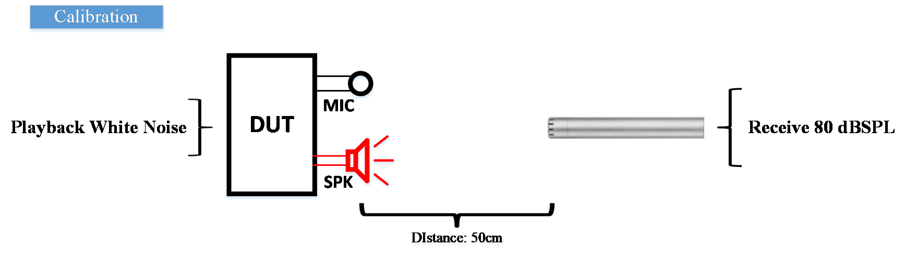
图12: 扬声器校正方式
-
-
DUT 记录来自 DUT SPK = AVGRMS(X) 的白噪声
-
使用粘土密封 MIC 孔，然后 DUT 记录来自 DUT SPK = AVGRMS(Y) 的白噪声
-
规格：AVGRMS(X)-AVGRMS(Y) 20dBRMS
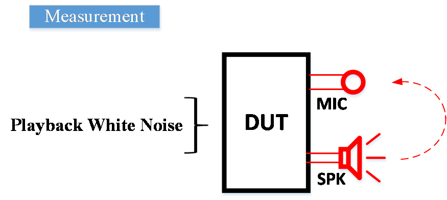
图13: 测量内部声学隔离方式
4.2.2. 扬声器质量
隔音检查后，我们必须测试扬声器在这种机械设计中的性能。
-
频率响应
-
禁用算法（AEC、NR、AGC、EQ...）
-
使用 SoundCheck 脚本"Triggered record Using WAV File.sqc"
-
DUT播放IEEE女声并将REF MIC录制的Tx音讯增益调整为Y dBSPL，完成DUT Tx音讯增益设置
-
通过 SoundCheck 生成 -18dBFS 20Hz ~ 20kHz 扫频正弦波
-
将扫频正弦波放入 DUT 并使用设置的 Tx 音讯增益播放此 .WAV
-
使用SoundCheck同时录音检查频率响应
-
-
总偕波失真 + 噪声
- 频率响应测试后，可以直接看到THD+N的结果
4.2.3. 麦克风质量
检查完隔音后，我们必须测试机构设计中的麦克风性能
a) 频率响应
-
禁用算法（AEC、NR、AGC、EQ...）
-
将 DUT Rx 音讯增益设置为 0
-
使用 SoundCheck 脚本"Open Loop Microphone.sqc"
-
使用SoundCheck与人工嘴播放的 IEEE 女声（置于 DUT MIC 位置）并以REF MIC录音
-
调整 SoundCheck 人工嘴播放音量，Ref MIC 必须测量 Z dBSPL
-
使用此音量设置，通过 SoundCheck 人工嘴播放 -18dBFS 20Hz ~ 20kHz 正弦波并通过 DUT MIC 录制
-
从 DUT 中拉出 .WAV 并将其放入 SoundCheck
-
使用 SoundCheck 分析这个 .WAV 并检查 FR
b) 总谐波失真 + 噪声
- FR测试后，可以直接看到THD+N的结果
备注：
DUT录音后，需要将音档转换为PCM类型.wav，Soundcheck才可以顺利使用该文件类型
4.2.4. DBRMS计算
下载Audacity软件，并使用stats.ny插件，如图13所示
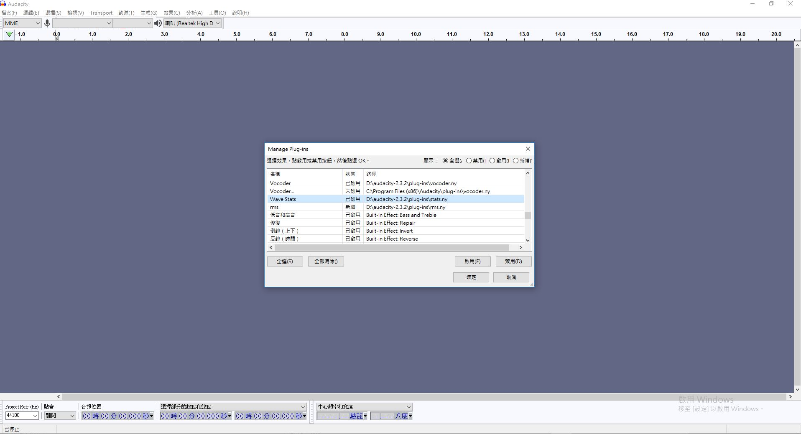
图13: Audacity 插件stats.ny
加载档案，选择analysis wav stats，可以得到如图13所示之窗口，请调整长度至10 sec
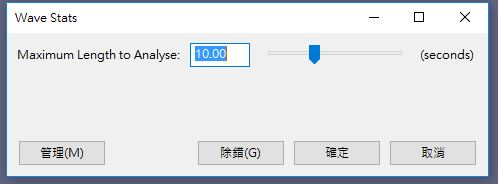
图14: Audacity Wave Stats
可以看到结果如 图15:
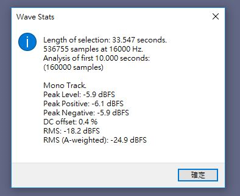
图15: dBRMS结果
4.2.5. 频率响应测量
导入wave文件，选择需要分析的区域，如图15。选择analysis Frequency graph，可以看到频率响应，如图16。然后用汉明窗和128点长度做分析频率响应。
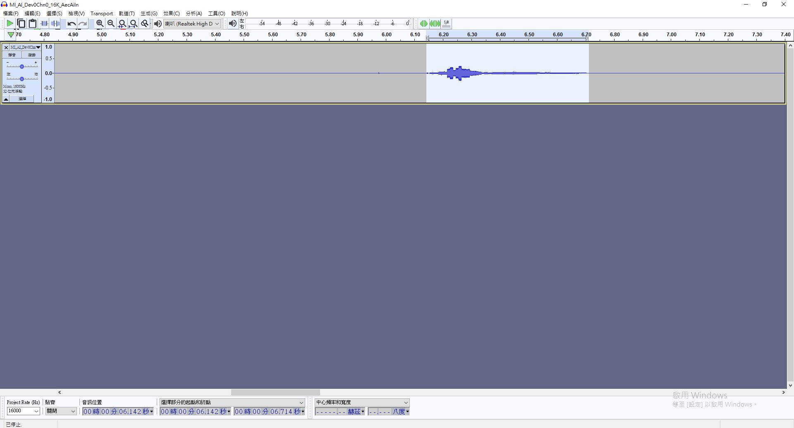
图16: 选择扫频的区段
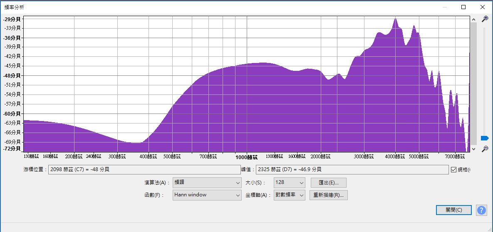
图17: 频率响应窗口
5. 机构无法修改之状况¶
<font color=red 当机构无法满足上述要求，且无法修改外壳设计，AEC性能会下降</font ，并产生一些副作用，如图 18 所示。
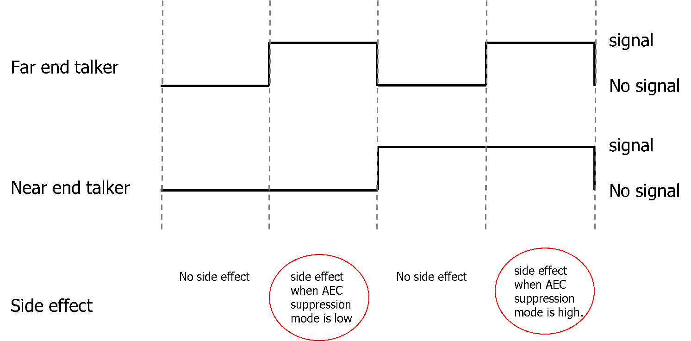
注意：两个红色圆圈中的条件是相互排斥的。
图18: 机构无法修改之影响
如果远程语者和近端语者同时讲话，当抑制强度设置得较低时，远程语者将听到残留的回声。 另一方面，如果抑制强度设置得较高，远程语者将无法听到来自近端讲话者的声音。
因为根本原因（由外壳机构引起）没有解决，所以不管使用什么调试软件，都会有一些副作用。接下来我们将给出一些关于回声消除软件调试的建议。但是请特别注意，这种副作用在一定程度上仍然存在。
5.1.1. AEC调试
-
将AO增益设置为0 db，AI增益设置为0 db。
-
重复4.2.3节的第四步，得到音档Record5.wav。
-
打开Recored5.wav，如图18所示，可以看到数字电平还是偏低。
-
从扬声器中播放出一个语音音（TestFile2.wav）文件，记录为Record_S.wav，如图19所示。可以看到数字电平还是很低。如有必要，需将麦克风增益调高。
-
调节麦克风增益3db，直到Record_S.wav出现截波，选择更大的麦克风增益电平，不会导致Record_S.wav出现截波，如图20所示。如果在麦克风增益或扬声器增益非常小时机构密封一样很差，请参阅第 5.1.2、5.1.3 和 5.1.4 节。
-
固定AO增益、AI增益并开启部分音频功能后，如果需要，预设的AEC抑制强度设置如下：
MI_U32 u32AecSupfreq[6] = {20,40,60,80,100,120};
MI_U32 u32AecSupIntensity[7] = {4,4,4,4,4,4,4};
请先测试单讲。如果AEC处理后有残留回声，请查看PCM波型，档名MI_AI_Dev0Chn0_16K_AecOut.wav，查看残留回声的频段。如果残余回声频率集中（如图21所示），请调整u32AecSupfreq和u32AecSupIntensity，转至步骤7。否则，需调高u32AecSupIntensity[7]数值。
-
根据每帧点数和取样频率计算剩余回声频段对应的频带u32AecSupfreq[6]。接着调高对应频段的强度参数u32AecSupIntensity。如图 21 所示，可以通过以下公式计算频带：
\frac{\text{residual\ echo\ frequency}}{\frac{\text{sampling\ rate}}{2}} \times point\ number = \frac{2600\sim 2800}{4000} \times 128 \approx 83\sim 90请按上面计算出之频带区间加强AEC 抑制强度：
MI_U32 u32AecSupfreq[6] = {20, 40, 60, 83, 90, 120};
MI_U32 u32AecSupIntensity[7] = {4, 4, 4, 4, 8, 4, 4};
调整后应抑制残留回声，如图22所示。
-
测试双向通话并重复第 6 步和第 7 步。
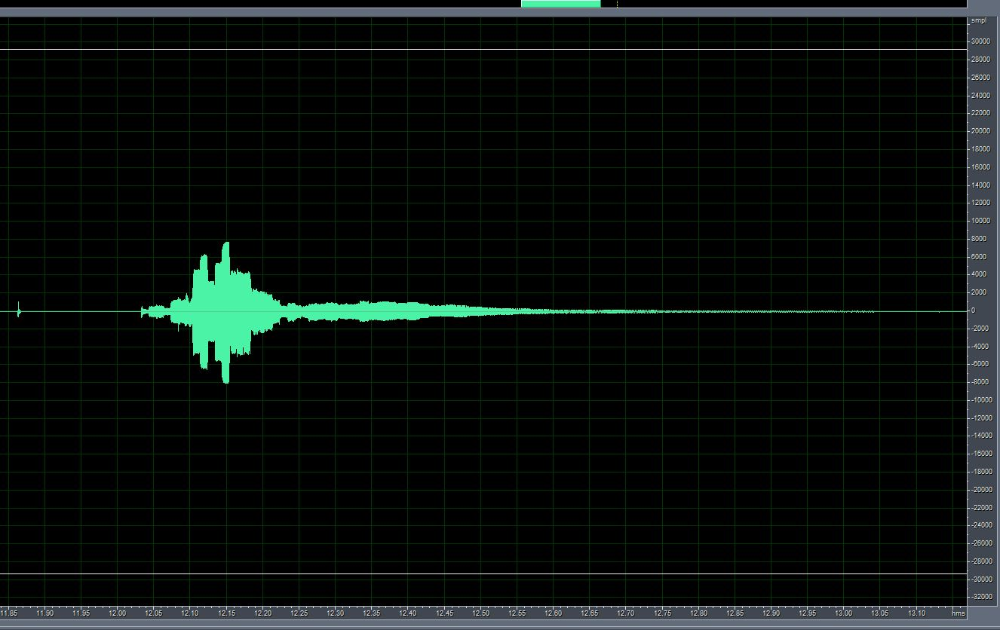
图19: 从扬声器播放扫描频时的回声
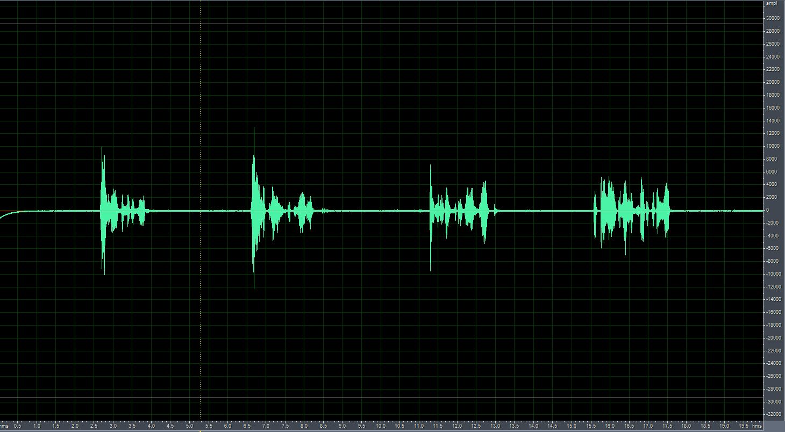
图20: 麦克风增益 = 0 DB
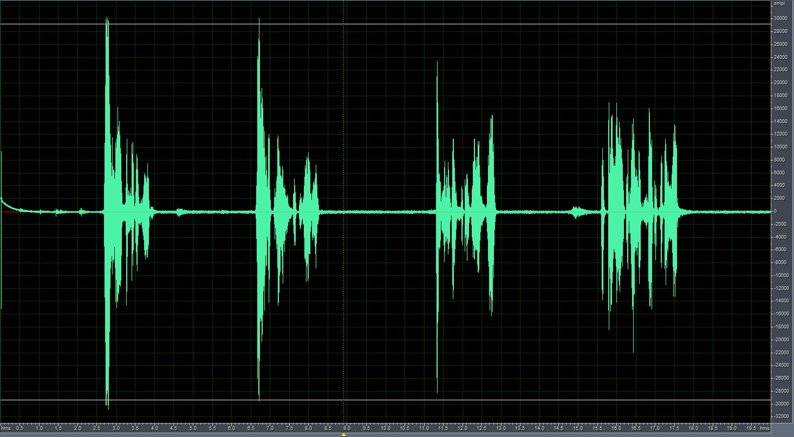
图21: 麦克风增益 = 24DB
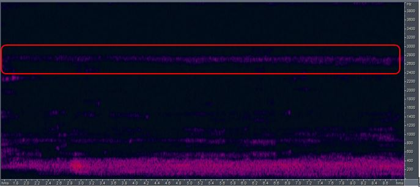
图22: 残留回声之频率集中在频带 2600~2800 Hz
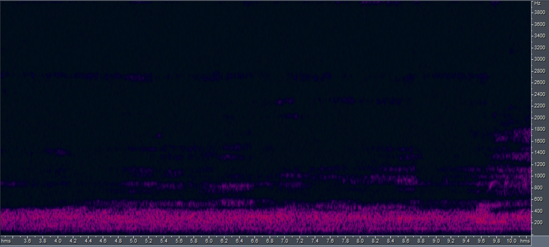
图23: AEC参数调整后之结果
5.1.2. AEC参数调试--范例 1
如果你完成了第0节的SOP，且麦克风增益很小，说明外壳的隔音性很差。 解决机构上的隔音问题是最好的解决方案。但如果您无法解决隔音问题，切记某些副作用是无可避免的。若您可以调低扬声器增益，请先调低扬声器电平，然后重复第0节中所述的过程以找到新的麦克风增益。 否则，请遵循以下SOP：
-
打开Record5.wav，如图23所示，然后将其转换到频域并得到频率响应。参见图 24。
-
在AO路径开启EQ，使用EQ抑制较高能量的回声频段，如图24。EQ设置方法见第14章。
-
在AO路径中应用EQ表，并重复第0部分中的SOP。
-
如果麦克风增益仍然很小，请在步骤 2中压抑更多的DB值，并重复步骤3。
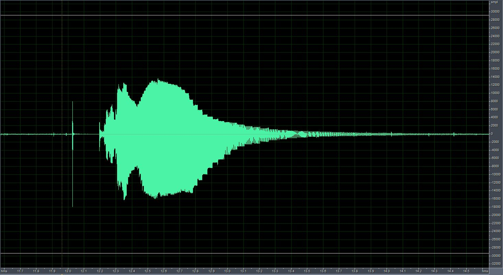
图24: 播放扫频音档回录的AE
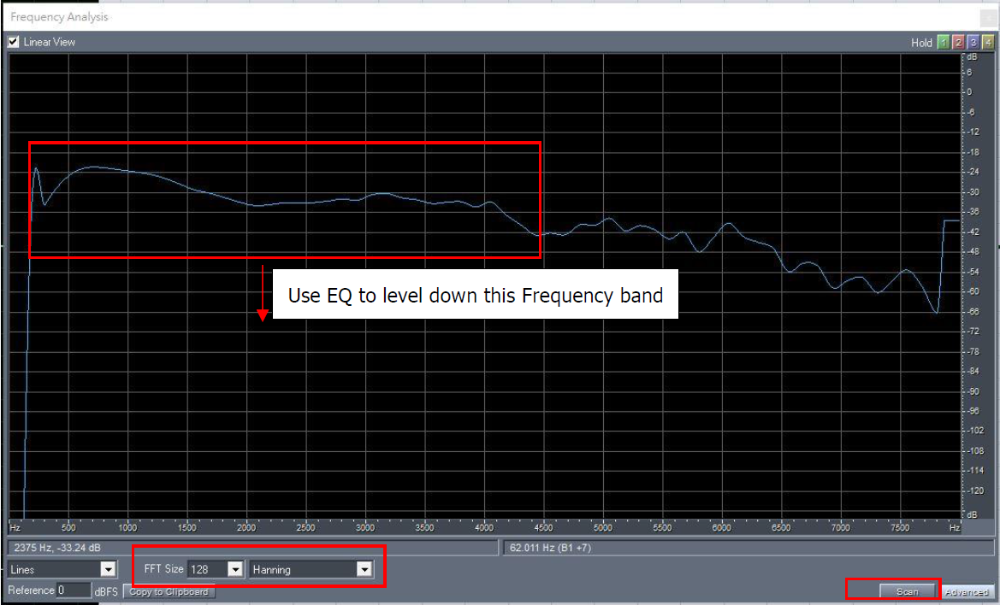
图25: AE频响曲线
5.1.3. AEC参数调试--范例2
若使用EQ后仍无法改善AEC效果，请调低麦克风增益并启用麦克风中的AGC功能和NR功能。AGC调试方法参见第7章和第10章。NR调试方法参见第11章。
5.1.4. AEC参数调试--范例3
如果麦克风输出仍然很小，但回声仍然截波，请先关闭HW loopback，然后将压抑强度设置得更高。 请记住启用AEC时可能产生的副作用。参见图 26。
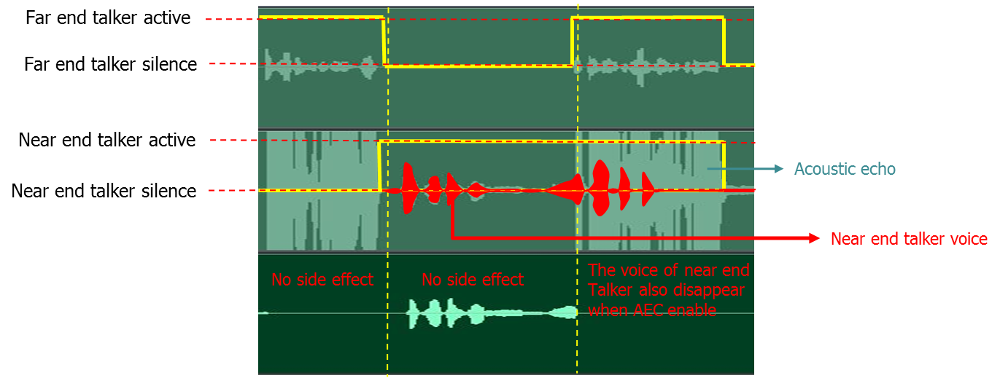
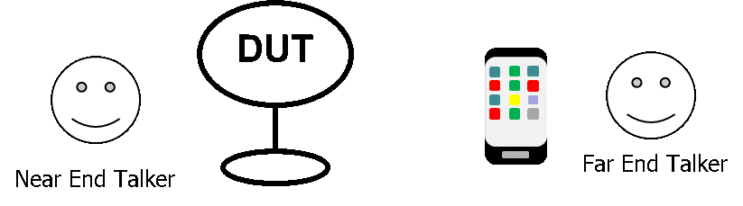
图26: 远程和近端同时启动时的副作用
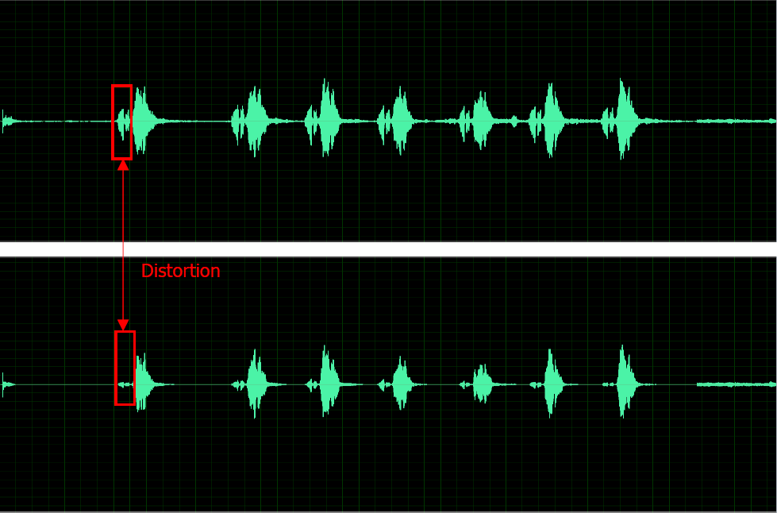
图27: 双端通话情况下的失真，其中近端语音的功率可能会降低
6. AEC结果波型¶
6.1. AEC不同强度下的结果(4 and 15)¶
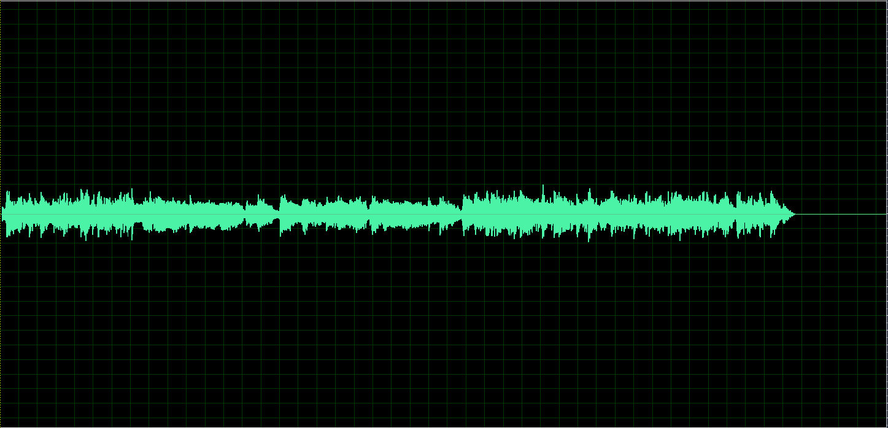
图28: 扬声器播放讯号(远程)
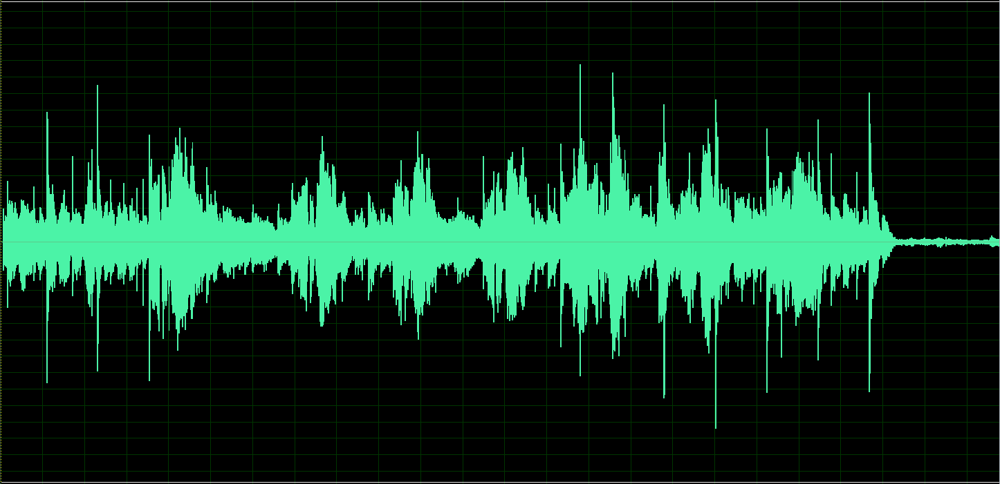
图29: 麦克风收到讯号(近端)
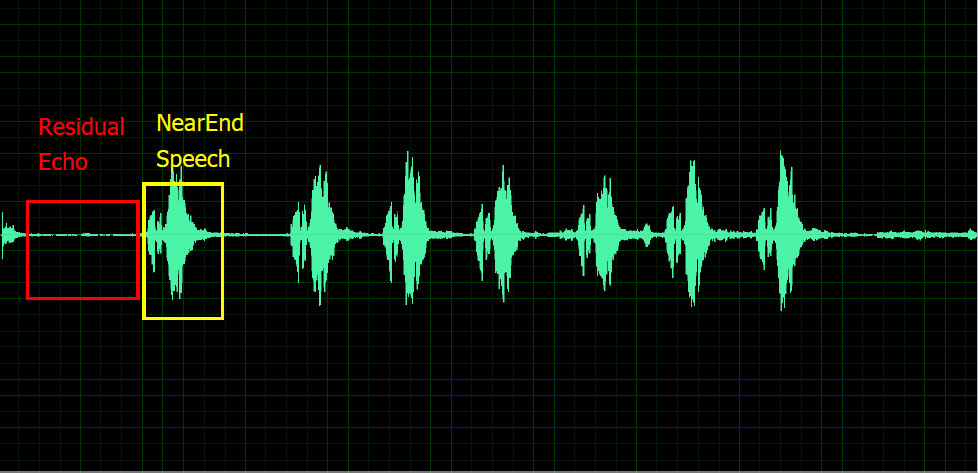
图30: AEC强度4之结果
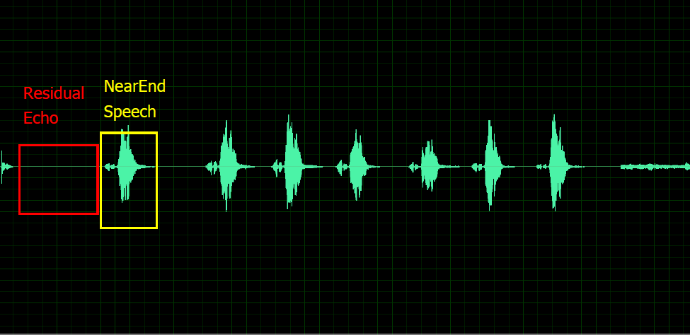
图31: AEC强度15之结果
AEC抑制强度决定了AEC的激进程度。强度0是最保守的，而强度15是最激进的。强度越激进，残余回声越少，出现的失真越大。建议强度为 4。
7. DH名词与定义¶
7.1. Lower Bin¶
lower bin表示最低抑制频带，根据采样率和点数计算。如果不抑制低于x Hz的频率区间，则根据以下公式计算下区间：
值范围：[0, 128]。最小单位为1。建议值为19。建议将此值始终设置为19以上；如果设置为小于19的值，则可能会抑制语音频率bin并导致正常语音失真。
7.2. PTPR阀值¶
峰阈功率比的阈值。它是啸叫检测的标准之一。该值设置得越小，越容易被检测为啸叫。值范围：[0, 80]。 最小单位为 1。建议值为0。
7.3. PAPR阀值¶
峰均功率比的阈值。它是啸叫检测的标准之一。该值设置得越小，越容易被检测为啸叫。值范围：[0, 80]。最小单位为1。建议值为10。
7.4. PHPR阀值¶
峰谐波功率比阈值。它是啸叫检测的标准之一。该值设置得越小，越容易被检测为啸叫。值范围：[0, 80]。最小单位为1。建议值为20。
7.5. Suppression阀值¶
范围内压抑啸叫能量的阈值。当范围内的啸叫能量超过该值时，会被抑制。该设置值越小，对啸叫频段周围的抑制程度越强。值范围：[0, 80]。 最小单位为1。建议值为5。
7.6. Supbins¶
帧中抑制频率区间的总数。如果超过此设定值，将被检测为过度啸叫帧。该设置值越小，越容易被检测为过度的啸叫帧。这个值需要和PTPR、PAPR、PHPR的阈值一起调整。当PTPR、PAPR和PHPR的阈值较小时，该值必须增大；否则，太容易被检测为过度的啸叫帧。值范围：[0, 128]。最小单位为1。建议值为30。
7.7. Excess Supbins Frames¶
这是检测是否降低音量的标准。当连续累积过多的啸叫帧超过该值时，必须降低音量才能达到更好的效果。该值越小，越容易达到需要较低音量的标准。请小心设置此值。如果设置得太低，容易将扬声器切换到低音量模式，使整体音量低于预期。反之，如果设置过高，则无法完全抑制啸叫。值范围：[0, 100]。 最小单位为1。推荐值为30。
7.8. Within Supbins Frames¶
是否恢复音量的标准。当非啸叫帧连续累积超过此值时，可以将音量调整回原始设置。该值设置得越小，越容易达到恢复音量的标准。请小心设置此值。如果设置得太低，容易将扬声器切换到原始音量模式，使整体音量不稳定。反之，如果此值设置得太高，则会使扬声器保持低音量。值范围：[0, 500]。最小单位为1。推荐值为100。
8. DH预设参数¶
8.1. 预设参数表¶
Table 1: DH 预设参数表
| Module | Parameter | Default |
|---|---|---|
| DH | Lower Bin | 19 |
| PTPR Threshold | 0 | |
| PAPR Threshold | 10 | |
| PHPR Threshold | 20 | |
| Suppression Threshold | 5 | |
| Supbins | 30 | |
| Excess Supbins Frames | 30 | |
| Within Supbins Frames | 100 |
9. AGC名词与定义¶
9.1. 压缩率曲线¶
压缩比曲线是输入功率电平(dBFS)和输出功率电平(dBFS)之间的关系（比率）。压缩率会压缩音频的动态范围。 您最多可以在输入输出功率电平的关系坐标上设置五个坐标点来确定您想要的曲线。这七个包含六个转折点的点可以确定六个不同的斜率。例如，如果压缩比设置如下：
compression_ratio_input[7] = {-80, -60, -50,-40,-30,-12,0}
compression_ratio_output[7] = {-80, -45, -36, -27, -18, -9, -6}
如图 31 所示，参数表示当输入为-80 dBFS时，Target Level将设置为-80 dBFS；当输入为-60 dBFS时，目标电平将设置为-45 dBFS，依此类推。

图32: 压缩率曲线
如果不需要六个转折点，可以将其余参数设置为零：
compression_ratio_input[7] = {-70, -60, -30, 0,0,0,0};
compression_ratio_output[7] = {-60, -50, -10, -3, 0,0,0};
如图32 所示，这组参数将只有三个不同的斜率。

图33: 三段斜率之压缩率曲线
在设置压缩比曲线之前，您必须检查输入数据功率电平，并了解您想要提升或衰减多少增益(dB)或您想要达到的目标功率电平。除此之外，数字功率电平并不代表扬声器的响度。实际响度应该用分贝计来测量。我们建议将压缩率曲线输出的最大值设置为-3 dBFS以防止数据截波。如果输出资料的功率电平不符合您的要求，您可以尝试在低电平输入功率上提高更多增益。换句话说，这意味着增加低功率电平曲线的斜率。
对于音频输入与输出，用户应提供清晰的压缩比曲线或想要达到多少平均能量(dBFS)的信息。如需记录真实场景中的波形数据，请用户提供以下信息：
-
扬声器和麦克风之间的确切距离（例如1m、2m、3m......）。
-
语者说话的响度（正常说话音量约65-70dBA）。
-
是否播放语音或音乐。可以的话希望客户提供wav档。如果用户需要播放语音，但没有wav档，请参考IEEE_Female_mono_16_kHz或IEEE_269-2010_Male_mono_16_kHz_-18dBFS。
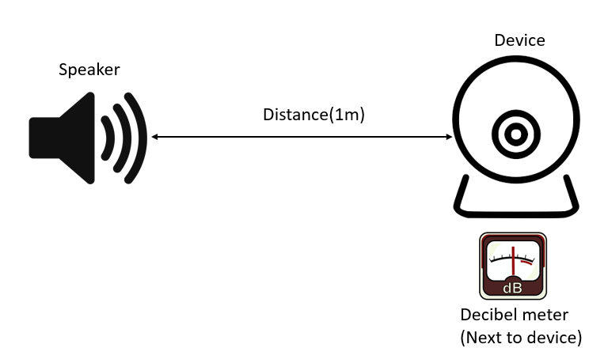
图34: 使用分贝计量测麦克风处之音量
对于音讯输出，用户应提供清晰的压缩率曲线或想要达到多少dB SPL（由分贝计测量）的信息。真实响度不仅与数字信号的功率电平有关，还与硬设备有关。如果数字数据的功率电平接近 0dBFS，但扬声器仍无法达到所需的音量，请要求用户更换扬声器或修改响度规格。如需分贝计测量数据，请用户提供以下信息：
-
设备与分贝计之间的准确距离（如 1m、2m、3m......）
-
设备在指定距离所需的响度
-
指定播放的音讯文件
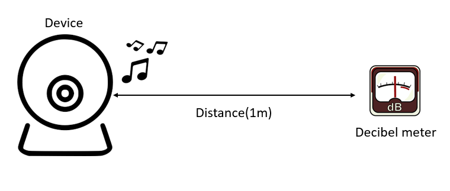
图35: Audio Output Record Schematic Diagram
此外，请填写AGC测试结果表。它可以协助我方FAE了解当前的情况。
9.2. Drop gain threshold¶
Drop gain threshold是指设置峰值允许输出幅度的值(dBFS)。在音频原始数据加上数字增益后，我们的AGC将估计峰值是否会超过此阈值。如果峰值超过阈值，数字增益将立即下降以防止截波。增益下降的最大值由参数Drop Gain Max决定。
9.3. Noise Gate Threshold¶
低于Noise Gate Threshold值时，AGC会逐渐将增益降为0，下降速度根据attack time相同。设置Noise Gate Threshold之前请先测量纯噪声信号功率电平，并设置合适的噪声门阈值，AGC会得到更好的效果。Noise Gate Threshold的优先级高于压缩率曲线。无论压缩率曲线设置多少，当输入的功率电平低于噪声门阈值时，信号都会被判断为噪声。最小单位为1dB。取值范围：[-80dBFS, 0dBFS]。建议值为-60 dBFS。
如果用户将噪声门阈值设置为正值，在相应的噪声门值以下增益将于上一帧相同。例如，如果用户将噪声门设置为60，如果输入数据的功率低于-60 dBFS，增益将保持不变。
用户也可以通过设置指定的曲线来达到想要的效果。如图 35 所示，如果功率低于-60dBFS噪声门限，我们的 AGC 将维持上一帧的增益。
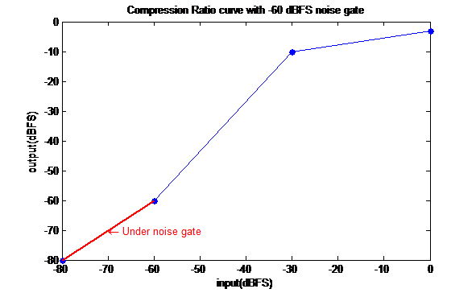
图36: 在噪声阀值下维持增益不变
9.4. Attack Time¶
两次增益递减之间的最短时间。请参考图36和图37。最小单位为4ms。这意味着增益将在帧与帧之间降低 0.5dB。建议值为1。如果设置为2，Attack time为8ms，以此类推。
9.5 Release Time¶
两次增益上升的最短时间。请参考图36和图37。最小单位为4ms。这意味着增益将在帧与帧之间增加0.5dB。 建议值为5。如果设置为2，Release time为8ms，以此类推。 注意：如果 Release Time 设置的太短，增益会快速增加。 它可能会导致高机率截波。
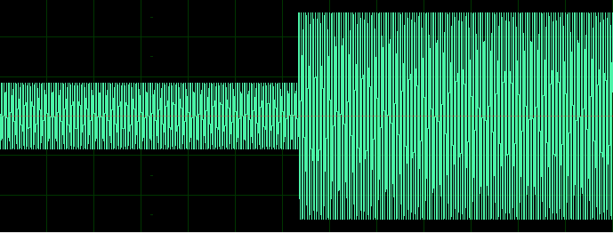
图37: AGC输入讯号
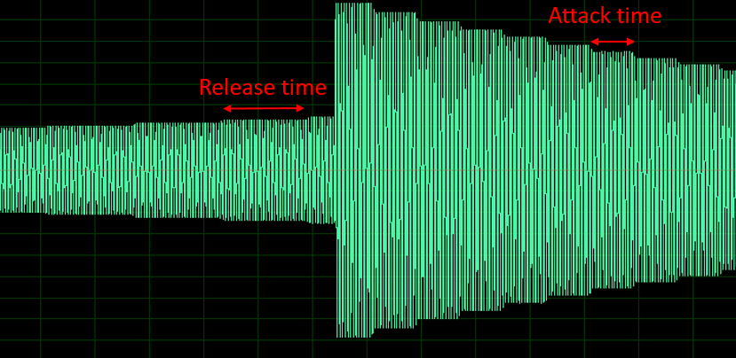
图38: AGC输出讯号，Release time与Attack time行为展示
9.6. Gain Info¶
Gain Info定义了AGC的最大、最小和初始增益值。
最小单位为1dB。
最大增益：值范围：[0 dB, 60 dB]
最小增益：值范围：[-40 dB, 30 dB]
初始增益：值范围：[-20 dB, 60 dB]
9.7. Drop Gain Max¶
Drop Gain Max是指防止输出饱和的增益下降最大值。由于AGC会在帧与帧之间平滑数据，因此不确定每个点是否都没有被截波。所以我们建议您同时透过压缩率曲线和释放时间，以确保没有数据截波。最小单位为 1dB。值范围：[0 dB, 60 dB]。 建议值为 12 dB。
注意：如果Drop Gain Max值设置得太大，帧和帧之间的连接处可能会出现明显的不平滑连接。另一方面，如果 Drop Gain Max值设置得太小，输出可能会有很多截波点。因此，您应该谨慎调整此参数以满足要求。
9.8. Noise Gate Attenuation¶
噪声门衰减是指输入功率在Noise gate以下时衰减的百分比。当输入信号的功率低于Noise gate时，信号会立即衰减指定百分比。请参阅图39。
最小单位为1。取值范围：[0, 100]。建议值为0。我们建议您避免使用噪声门衰减，以防止输出信号听起来像是连接中断。此外，语音的尾音和起始音也高机率会被衰减，使语音变得不自然。
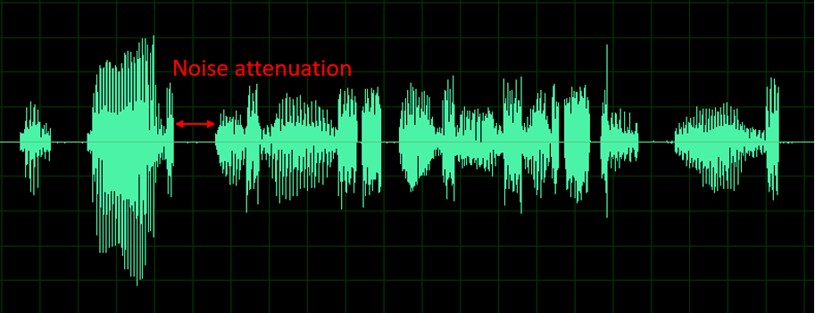
图39: Noise Gate Attenuation
9.9. Gain Step¶
增益上升或下降的速度. 如果设为1, 帧与帧之间升降增益的单位是±0.5dB。
若设定值越高，音量升降速度越快，最小单位为1。取值范围：[0, 10]。建议值为1。
9.10. Automatic gain control by frequency band¶
当用户设置模式为2时，我们的AGC支持按频段调整增益。用户最多可以设置不同的3个频段。
例如：
int freqBand[3] = {3000,6000,8000};
IaaApc_SetAgcFreqBand(handle, freqBand);
然后，用户可以为每个频段设置不同的压缩比曲线，如下示例代码：
int compressionRatioArrayLowInput[7] = {-80,-60,-40,-20,0,0,0};
int compressionRatioArrayLowOutput[7] = {-5,-5,-5,-5,-5,-5,-5};
int compressionRatioArrayMidInput[7] = {-80,-60,-40,-20,0,0,0};
int compressionRatioArrayMidOutput[7] = {-80,-60,-40,-20,0,0,0};
int compressionRatioArrayHighInput[7] = {-80,-60,-40,-20,0,0,0};
int compressionRatioArrayHighOutput[7] = {-80,-60,-40,-20,0,0,0};
IaaApc_SetLowFreqCompressionRatioCurve(handle, compressionRatioArrayLowInput, compressionRatioArrayLowOutput);
IaaApc_SetMidFreqCompressionRatioCurve(handle, compressionRatioArrayMidInput, compressionRatioArrayMidOutput);
IaaApc_SetHighFreqCompressionRatioCurve(handle, compressionRatioArrayHighInput, compressionRatioArrayHighOutput);
AGC 会对不同的频段应用不同的输入输出关系曲线。
10. AGC范例问题解法¶
10.1 Clipping¶
如果输出信号数据的截波点过多，可以通过增加 Drop Gain Max 或降低 Compression Curve 的斜率或增加 Release Time。
下面的图39显示了不同Drop Gain Max值的结果。上图是Drop Gain Max 6dB的结果，下图是Drop Gain Max 12dB的结果，其中Drop Gain Max测量值太小，导致增益衰减不够。
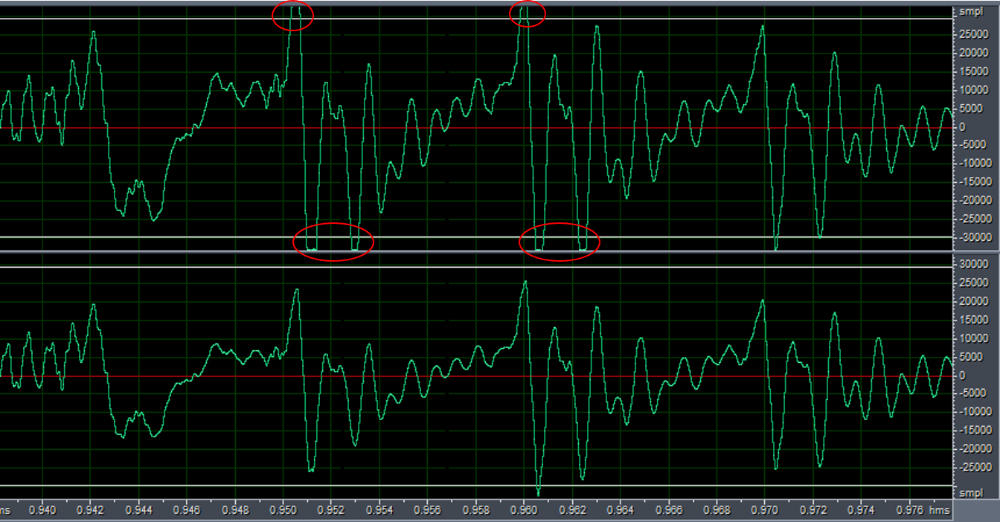
图40: 不同Drop gain value状态下的截波状况
图40显示了不同压缩比曲线的结果。上一个在-48 dBFS到-25 dBFS的范围内提升较小的增益，可以避免音量突然增加。
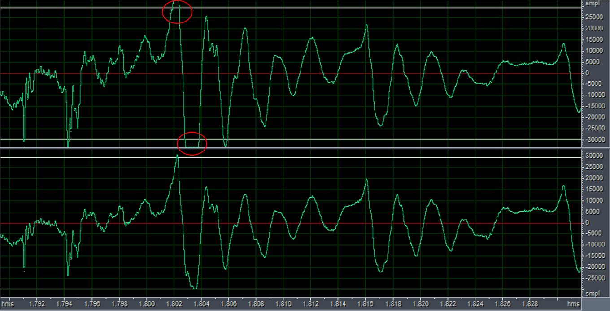
图41: 不同压缩率曲线的截波状况
图 41 显示了不同发布时间的结果。合适的Release Time可以有效的减少截波点。 但如果Release Time设置的太长，会导致AGC拉升增益速度太慢，整体音量不够。
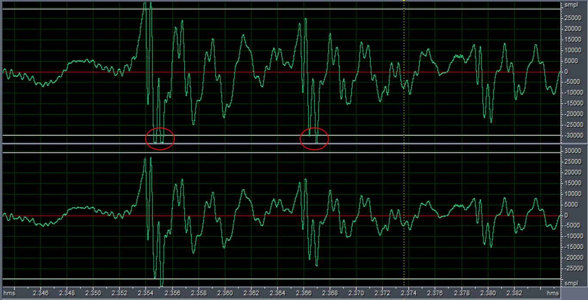
图42: 不同Release time的截波状态
10.2. AGC失效¶
如果输出信号在0.5秒后没有应用任何增益，请检查增益信息、释放时间、起音时间和压缩比曲线。如果Gain Info设置不正确，将严重影响AGC套用增益，请把Gain Info设置成更大的范围。
如果Noise gate设置得太高，输入信号将保持在Noise gate之下，AGC不会对输出信号套用增益。请检查语音功率电平是否在您设置的Noise gate之下。如果要按百分比衰减噪声门以下的信号，请调整配置（参见第9.8节）。但请注意，此参数可能会导致结尾和起点的声音不自然。因此，在设置此参数时，应仔细考虑Noise gate值。设置完成后，转存输入档，并将输出档发送给SigmaStar FAE做分析。
10.3. AGC后音量太小¶
如果输出平均功率电平没有达到您需要的目标能量，请检查压缩比曲线设置、噪声门和释放时间，查看释放时间是否设置得太长或压缩比曲线设置得太平缓，以修复相应的问题。
11. NR名词与定义¶
11.1. NR模式¶
降噪模式；
取值范围：[0, 1, 2]。
0：默认语音模式
1：用户设置模式
11.2. NR Intensity Frequency Band¶
NR支持7个不同强度的灵活频段。 用户可以在 0 到 128 的范围内设置该值。该值代表频率区间。最小单位为1。例如设置强度频带为{3,24,40,64,80,100}表示NR将被分成7段，即0-3、3-24、24-40、40-64、64-80、80-100和100-128。0-3代表从0Hz到\frac{\frac{\text{sample\ rate}}{2}}{128}*3Hz的频率，3-24代表从\frac{\frac{\text{sample\ rate}}{2}}{128}*3到\frac{\frac{\text{sample\ rate}}{2}}{128}*24的频率 128*24Hz 等等。
11.3. NR Intensity¶
NR强度支持7个不同频段；强度30是最高级别的噪声抑制，但它会带来更多细节损失/损坏。建议您观察输入数据的频谱，判断哪个频段需要更大的强度。与参数 NR Intensity Frequency Band一起，您可以选择所需的任何频率区域。
11.4. NR Smooth Level¶
信号频域平滑电平；值越大，信号越平滑。
取值范围：[0, 10]。 最小单位为 1。建议值为 10。
11.5. NR Converge Speed¶
噪声估计更新速度；然而，较大的值会导致NR检测噪声更快，但代价是更多的细节损失/损坏。取值范围：[0, 1, 2]。 建议值为 1。
11.6. NR Filter Mode¶
降噪滤波器模式； 取值范围：[0, 1, 2, 3, 4, 5]。
0：默认噪声估计模式
1：修正噪声估计模式
2：积极噪声估计类型 1 模式
3：积极噪声估计类型 2 模式
4：快速噪声估计模式
5：深度学习模式模式
0 到模式 4基于传统的信号处理方法。模式 5 基于深度学习方法。考虑到计算成本从大到小依次为模式5、模式1、模式2、模式3、模式0和模式4。推荐模式为模式0。在某些场景下，如冲击噪声和非平稳噪声，推荐模式为5。
注意：如果 NR Filter Mode为5，NR Converge Speed应设置为2。5: Deep learning mode
12. NR与AGC预设参数¶
12.1 预设参数表¶
Table 2: NR与AGC预设参数表
| Module | Parameter | Scenario (Mode) | |
|---|---|---|---|
| Speech Mode | Music Mode | ||
| NR | Intensity band | {3,24,40,64,80,128}; | {3,24,40,64,80,128}; |
| Intensity | {20,20,20,20,20,20,20} | {20,20,20,20,20,20,20} | |
| Smooth Level | 10 | 10 | |
| Converge Speed | 1 | 1 | |
| Filter Mode | 0 | 0 | |
| AGC | Drop gain threshold | -3 | -3 |
| Attack Time | 1 | 1 | |
| Release Time | 5 | 5 | |
| Noise Gate | -60 | -60 | |
| Compression Ratio Input | {-77,-70,-40,-20,-15,-10,-5} | {-77,-70,-40,-20,-15,-10,-5} | |
| Compression Ratio Output | {-80,-60,-30,-15,-10,-5,-3} | {-80,-60,-30,-15,-10,-5,-3} | |
| Noise Gate Attenuation | 0 | 0 | |
| Drop Gain Max | 12 | 12 | |
| Maximum Gain | 20 | 20 | |
| Minimum Gain | -5 | -5 | |
| Initial Gain | 0 | 0 | |
| Gain Step | 1 | 1 | |
13. NR结果波型¶
13.1. 不同强度之NR结果波型 (15和30)¶
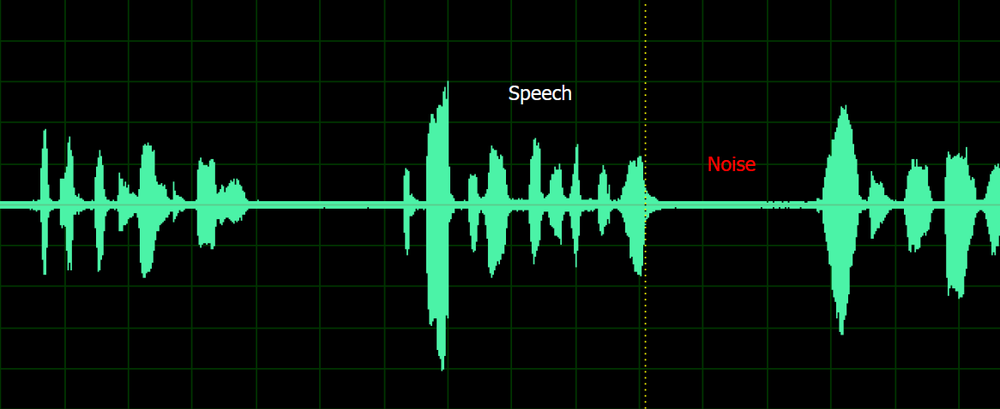
图43: NR 结果波型 (强度: 15)
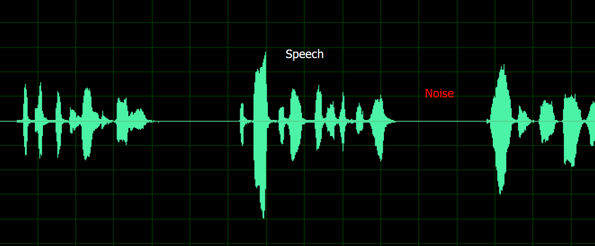
图44: NR 结果波型 (强度: 30)
14. EQ参数设定¶
请设置数组eq_gain_db[_EQ_BAND_NUM]，表示EQ频段的增益调整，然后将频率分成129等份。
每个值代表： 8k / 129 = 62.015 赫兹
8 kHz频段仅在采样频率（s32WorkSampleRate）设置为16 kHz时有效。 每个频段的取值范围为 [--100, +20] dB。 例如，如果您需要将 -10DB 从 1560 Hz 降低到 3000 Hz，则设置 eq_gain_db 数组索引，(floor(\frac{1560}{62.015}) 至 ceil(\frac{3000}{62.015}) ) 增益为 -10 DB。